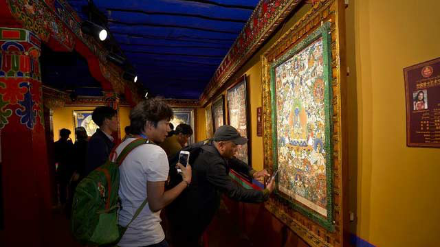

中国西藏新闻网

9月28日,第二届藏博会暨中国唐卡艺术节隆重开幕,西藏唐卡艺术鉴定中心揭牌仪式、精品唐卡开展仪式也于同日在夏扎大院同时举行,自治区相关领 导、唐卡大师等区内外嘉宾280余人出席开幕仪式。2014年10月中共西藏自治区党委办公厅、西藏自治区政府办公厅下发《关于推动唐卡产业加快发展的意 见》,明确提出了成立唐卡艺术鉴定中心,建立权威的评价标准、评价专家库和评价发布机制,为唐卡作品提供鉴定。
中国唐卡艺术节组委会相关负 责人介绍,西藏唐卡艺术鉴定中心成立后,将面向国内外承担唐卡艺术作品(绘画、工艺作品)的鉴定。鉴定范围包括年代、流派、材质、工艺品相关及其艺术质 量,其中以艺术质量、作品感染力为主要评判因素。其次是唐卡作品等级评定、矿植物颜料鉴定、唐卡收藏品的鉴定以及装潢材料装裱质量等的鉴定。西藏唐卡艺术 鉴定中心的成立,将使唐卡艺术得到更好的保护、传承、发展和创新。作为第二届中国西藏旅游文化国际博览会的重要组成部分,中国唐卡艺术节从9月28日起将 持续至10月2日。三大主题活动“中国唐卡艺术节精品展”、“中国唐卡艺术节作品交易展”以及《中国唐卡艺术高端论坛》,都将为你带来惊喜。
据了解,此次中国唐卡艺术节还有7大亮点:
1.众多唐卡大师为本届中国唐卡艺术节保驾护航。此次精品展专设大师厅,一次性集中展示代表目前国内唐卡绘画最高水准的大师作品,让你一饱眼福。
2. 本届唐卡艺术节地域、流派覆盖面之广创历史之最。除了传统的青海、四川、甘肃、云南、西藏区内的作品,很多稀有的唐卡艺术作品首次亮相,如工艺美术大师姚红英首次在雪域高原展示她的缂丝、苏绣唐卡作品,其精美程度绝对值得一看。
3. 尼泊尔唐卡及唐卡画师首次大规模走进西藏。本届中国唐卡艺术节精品展特别设置了尼泊尔厅,展示了11幅尼泊尔著名唐卡画师的作品。
4. 唐卡矿植物颜料首次走进公众视线。此次唐卡艺术节为公众揭开了唐卡矿植物颜料的神秘面纱,在交易展现场,现场展示了矿植物颜料的碾磨制作过程,以及布达拉品牌唐卡矿植物颜料产品。
5. 加入观众互动式体验。本次唐卡艺术节开通了网站、徽信公众号等多种方式与公众互动,同时在唐卡艺术节现场也有多种公众参与的活动。
6. 古建大院与现代化科技结合,为传统艺术展示掀开新篇章。本次艺术节的主办地夏扎大院原是旧时西藏贵族遗产,是老城区最古老的非寺庙建筑之一。
7. 喇嘛玛尼说唱艺人现场说唱。本次唐卡艺术展,将邀请国家非物质文化艺术大师、自治区级传承艺人,喇嘛玛尼的说唱艺人现场说唱悬挂唐卡的内容,包括唐卡的绘制和所含的意义。这样即使是外行,也不怕看不懂唐卡。
■走进“中国唐卡之都”唐卡画院,了解唐卡大师的传奇人生
次仁罗布:无偿授徒,传承钦孜派唐卡文化
次仁罗布,钦孜派第三代传承人;西藏自治区美术家协会理事;拉萨市美术家协会理事;中国唐卡之都唐卡画院院长;西藏自治区工艺美术大师;西藏自治区非物质文化遗产钦孜派传承人;中国唐卡艺术节专家委员会委员。
次仁罗布是拉萨市曲水县人,1979年从曲水县中学初中毕业,一个偶然的机会,次仁罗布见到一位唐卡艺人在他所在的学校旁边“画画”,年仅16岁的他被这位 唐卡艺人的画深深吸引,于是,在他的强烈要求下,次仁罗布拜在了他的门下。原来,吸引次仁罗布走上唐卡艺术道路的并不是泛泛之辈,正是著名钦孜派唐卡画师 丹巴嘉措之子次仁。次仁罗布初中毕业后,就开始跟随次仁老师学习画唐卡,一学就是5年。
为了将自己的技艺打磨得更加全面,1985年,次仁 罗布师从强巴格列画师研习壁画绘制和学习勉唐派绘画技法;1988年师从古桑朗杰学习西藏壁画制作;1990年师从西藏著名画师扎西次仁学习西藏唐卡画绘 制及修复技艺。经过不断的刻苦学习,次仁罗布在研习钦孜派画风的同时,掌握了勉唐派的唐卡绘制技法,并获得丹巴绕旦大师颁发的勉唐派画师毕业证书。
次仁罗布除了绘制唐卡,给一些寺庙修复壁画以外,自己在八廓街还经营着一家小店,店面虽然不大,但里面展示的作品可不少,前来订购唐卡的顾客更是络绎不绝。 “当时店里生意还不错,店里放置的唐卡基本上都被订购了,而所得收入正好用来填补学生的食宿之需。但是因为我的老师,次仁老师是钦孜派的第二代传承人,在 他去世之后,老师的家人里并没有一个人可以担任钦孜派的传承人。政府非常重视钦孜派的传承问题,于是就找到了我。之后,政府部门推荐我申请到西藏自治区非 物质文化遗产钦孜派的传承人,再之后我便成为第三代钦孜派的传承人,负责将钦孜派唐卡艺术传承发扬光大。后来,在西藏达氏集团有限责任公司的推荐与帮助 下,在拉萨夏扎大院成立了中国唐卡之都唐卡画院,并担任画院院长。我自己也有50多个学生,可是我一直都担心自己所学不够,教不好学生,也害怕精力不够打 理不好画院,对于钦孜派唐卡艺术的传承与发扬带来不好的影响,于是,我关掉了那个店面,一心教学。”次仁罗布说。
说起无偿授徒,次仁罗布有自己的想法:“现在很多家庭都不容易,我这样做一来可以减轻学生家里的负担,再者也想让他们没有后顾之忧,可以专心学习并将钦孜派发扬光大。毕竟一个人的能力是有限的,钦孜派的传承需要更多人。”
次仁罗布最后透露,在拉萨夏扎大院,正在筹建一所唐卡职业技术学校,把唐卡技艺纳入正规的教育体系,使得现代文化知识能与传统唐卡技艺更好地衔接,使唐卡技艺更好地推广出去。